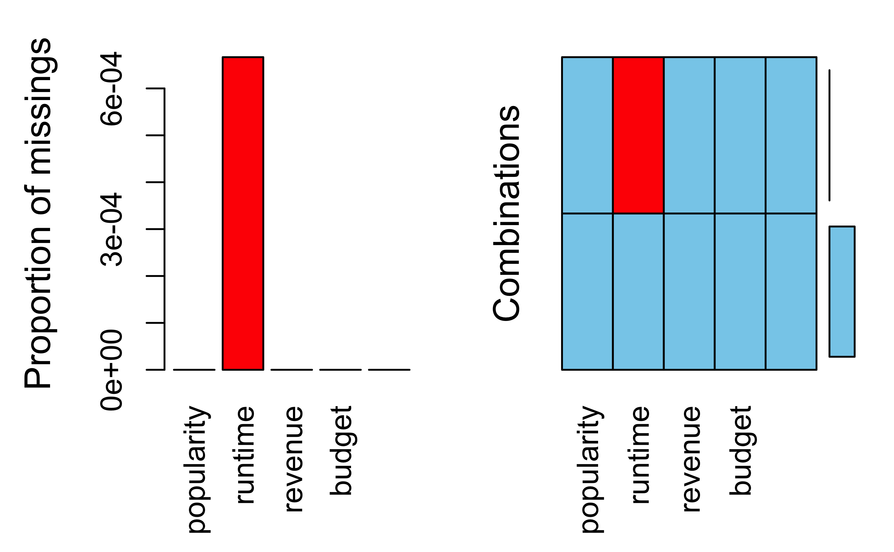

Kapitel 4 Grundkonzepte
4.1 Was ist Data Science?
Es gibt mehrere Definitionen von Data Science, aber keinen kompletten Konsens. Baumer, Kaplan, and Horton (2017) definieren Data Science wie folgt (S. 4):
The science of extracting meaningful information from data
Auf der anderen Seite entgegen viele Statistiker: “Hey, das machen wir doch schon immer!”.
Eine Antwort auf diesen Einwand ist, dass in Data Science nicht nur die Statistik eine Rolle spielt, sondern auch die Informatik sowie - zu einem geringen Teil - die Fachwissenschafte (“Domäne”), die sozusagen den Empfänger bzw. die Kunden oder den Rahmen stellt. Dieser “Dreiklang” ist in folgendem Venn-Diagramm dargestellt.
4.2 Was ist Machine Learning?
Maschinelles Lernen (ML), oft auch (synonym) als statistisches Lernen (statistical learning) bezeichnet, ist ein Teilgebiet der künstlichen Intelligenz (KI; artificial intelligence, AI) (Rhys 2020). ML wird auch als data-based bezeichnet in Abgrenzung von rule-based, was auch als “klassische KI” bezeichnet wird, vgl. Abb. 4.1.
Figure 4.1: KI und Maschinelles Lernen
In beiden Fällen finden Algorithmen Verwendung. Algorithmen sind nichts anderes als genaue Schritt-für-Schritt-Anleitungen, um etwas zu erledigen. Ein Kochrezept ist ein klassisches Beispiel für einen Algorithmus.
Hier findet sich ein Beispiel für einen einfachen Additionsalgorithmus.
Es gibt viele ML-Algorithmen, vgl. Abb. 4.2.
Figure 4.2: ML-Matroschka
4.2.1 Rule-based
Klassische (ältere) KI implementiert Regeln “hartverdrahtet” in ein Computersystem. Nutzer füttern Daten in dieses System. Das System leitet dann daraus Antworten ab.
Regeln kann man prototypisch mit Wenn-Dann-Abfragen darstellen:
lernzeit <- c(0, 10, 10, 20)
schlauer_nebensitzer <- c(FALSE, FALSE, TRUE, TRUE)
for (i in 1:4) {
if (lernzeit[i] > 10) {
print("bestanden!")
} else {
if (schlauer_nebensitzer[i] == TRUE) {
print("bestanden!")
} else print("Durchgefallen!")
}
}## [1] "Durchgefallen!"
## [1] "Durchgefallen!"
## [1] "bestanden!"
## [1] "bestanden!"Sicherlich könnte man das schlauer programmieren, vielleicht so:
## # A tibble: 4 × 3
## lernzeit schlauer_nebensitzer bestanden
## <dbl> <lgl> <lgl>
## 1 0 FALSE FALSE
## 2 10 FALSE FALSE
## 3 10 TRUE TRUE
## 4 20 TRUE TRUE4.2.2 Data-based
ML hat zum Ziel, Regeln aus den Daten zu lernen. Man füttert Daten und Antworten in das System, das System gibt Regeln zurück.
James et al. (2021) definieren ML so: Nehmen wir an, wir haben die abhängige Variable \(Y\) und \(p\) Prädiktoren, \(X_1,X_2, \ldots, X_p\). Weiter nehmen wir an, die Beziehung zwischen \(Y\) und \(X = (X_1, X_2, \ldots, X_p)\) kann durch eine Funktion \(f\) beschrieben werden. Das kann man so darstellen:
\[Y = f(X) + \epsilon\]
ML kann man auffassen als eine Menge an Verfahren, um \(f\) zu schätzen.
Ein Beispiel ist in Abb. 4.3 gezeigt (James et al. 2021).

Figure 4.3: Vorhersage des Einkommens durch Ausbildungsjahre
Natürlich kann \(X\) mehr als eine Variable beinhalten, vgl. Abb. 4.4 (James et al. 2021).

Figure 4.4: Vorhersage des Einkommens als Funktion von Ausbildungsjahren und Dienstjahren
Anders gesagt: traditionelle KI-Systeme werden mit Daten und Regeln gefüttert und liefern Antworten. ML-Systeme werden mit Daten und Antworten gefüttert und liefern Regeln zurück, vgl. Abb. 4.5.
Figure 4.5: Vergleich von klassischer KI und ML
4.3 Modell vs. Algorithmus
4.3.1 Modell
Ein Modell, s. Abb. 4.6 (Spurzem 2017)!

Figure 4.6: Ein Modell-Auto
Wie man sieht, ist ein Modell eine vereinfachte Repräsentation eines Gegenstands.
Der Gegenstand definiert (gestaltet) das Modell. Das Modell ist eine Vereinfachung des Gegenstands, vgl. Abb. 4.7.

Figure 4.7: Gegenstand und Modell
Im maschinellen Lernen meint ein Modell, praktisch gesehen, die Regeln, die aus den Daten gelernt wurden.
4.3.2 Beispiel für einen ML-Algorithmus
Unter einem ML-Algorithmus versteht man das (mathematische oder statistische) Verfahren, anhand dessen die Beziehung zwischen \(X\) und \(Y\) “gelernt” wird. Bei Rhys (2020) (S. 9) findet sich dazu ein Beispiel, das kurz zusammengefasst etwa so lautet:
Beispiel eines Regressionsalgorithmus
- Setze Gerade in die Daten mit \(b_0 = \hat{y}, b_1 = 0\)
- Berechne \(MSS = \sum (y_i - \hat{y_i})^2\)
- “Drehe” die Gerade ein bisschen, d.h. erhöhe \(b_1^{neu} = b_1^{alt} + 0.1\)
- Wiederhole 2-3 solange, bis \(MSS < \text{Zielwert}\)
Diesen Algorithmus kann man “von Hand” z.B. mit dieser App durchspielen.
4.4 Taxonomie
Methoden des maschinellen Lernens lassen sich verschiedentlich gliedern. Eine typische Gliederung unterscheidet in supervidierte (geleitete) und nicht-supervidierte (ungeleitete) Algorithmen, s. Abb. 4.8.
Figure 4.8: Taxonomie der Arten des maschinellen Lernens
4.4.1 Geleitetes Lernen
Die zwei Phasen des geleiteten Lernens sind in Abb. 4.9 dargestellt.
Figure 4.9: Geleitetes Lernen geschieht in zwei Phasen
4.4.1.1 Regression: Numerische Vorhersage

Die Modellgüte eines numerischen Vorhersagemodells wird oft mit (einem der) folgenden Gütekoeffizienten gemessen:
- Mean Squared Error (Mittlerer Quadratfehler):
\[MSE := \frac{1}{n} \sum (y_i - \hat{y}_i)^2\]
- Mean Absolute Error (Mittlerer Absolutfehler):
\[MAE := \frac{1}{n} \sum |(y_i - \hat{y}_i)|\]
Wir sind nicht adaran interessiert die Vorhersagegenauigkeit in den bekannten Daten einzuschätzen, sondern im Hinblick auf neue Daten, die in der Lernphase dem Modell nicht bekannt waren.
4.4.1.2 Klassifikation: Nominale Vorhersage

Die Modellgüte eines numerischen Vorhersagemodells wird oft mit folgendem Gütekoeffizienten gemessen:
- Mittlerer Klassifikationfehler \(e\):
\[e := \frac{1}{n} I(y_i \ne \hat{y}_i) \]
Dabei ist \(I\) eine Indikatorfunktion, die 1 zurückliefert,
wenn tatsächlicher Wert und vorhergesagter Wert identisch sind.
4.4.2 Ungeleitetes Lernen
Die zwei Phasen des ungeleiteten Lernens sind in Abb. 4.10 dargestellt.
Figure 4.10: Die zwei Phasen des ungeleiteten Lernens
Ungeleitetes Lernen kann man wiederum in zwei Arten unterteilen, vgl. Abb. 4.11:
- Fallreduzierendes Modellieren (Clustering)
- Dimensionsreduzierendes Modellieren (z.B. Faktorenanalyse)

Figure 4.11: Zwei Arten von ungeleitetem Modellieren
4.5 Ziele des ML
Man kann vier Ziele des ML unterscheiden, s. Abb. 4.12.
Figure 4.12: Ziele des maschinellen Lernens
Vorhersage bezieht sich auf die Schätzung der Werte von Zielvariablen (sowie die damit verbundene Unsicherheit). Erklärung meint die kausale Analyse von Zusammenhängen. Beschreibung ist praktisch gleichzusetzen mit der Verwendung von deskriptiven Statistiken. Dimensionsreduktion ist ein Oberbegriff für Verfahren, die die Anzahl der Variablen (Spalten) oder der Beobachtungen (Zeilen) verringert.s
Wie “gut” ein Modell ist, quantifiziert man in verschiedenen Kennzahlen; man spricht von Modellgüte oder model fit. Je schlechter die Modellgüte, desto höher der Modellfehler, vgl. Abb. 4.13.

Figure 4.13: Wenig (links) vs. viel (rechts) Vorhersagefehler
Die Modellgüte eines Modells ist nur relevant für neue Beobachtungen, an denen das Modell nicht trainiert wurde.
4.6 Über- vs. Unteranpassung
Overfitting: Ein Modell sagt die Trainingsdaten zu genau vorher - es nimmt Rauschen als “bare Münze”, also fälschlich als Signal. Solche Modelle haben zu viel Varianz in ihren Vorhersagen.
Underfitting: Ein Modell ist zu simpel (ungenau, grobkörnig) - es unterschlägt Nuancen des tatsächlichen Musters. Solche Modelle haben zu viel Verzerrung (Bias) in ihren Vorhersagen.
Welches der folgenden Modelle (B,C,D) passt am besten zu den Daten (A), s. Abb. 4.14, vgl. (Sauer 2019), Kap. 15.

Figure 4.14: Over- vs. Underfitting
Welches Modell wird wohl neue Daten am besten vorhersagen? Was meinen Sie?
Modell D zeigt sehr gute Beschreibung (“Retrodiktion”) der Werte, anhand derer das Modell trainiert wurde (“Trainingsstichprobe”). Wird es aber “ehrlich” getestet, d.h. anhand neuer Daten (“Test-Stichprobe”), wird es vermutlich nicht so gut abschneiden.
Es gilt, ein Modell mit “mittlerer” Komplexität zu finden, um Über- und Unteranpassung in Grenzen zu halten. Leider ist es nicht möglich, vorab zu sagen, was der richtige, “mittlere” Wert an Komplexität eines Modells ist, vgl. Abb. 4.15 aus (Sauer 2019).

Figure 4.15: Mittlere Modellkomplexität führt zur besten Vorhersagegüte

{kind=link}
4.8 Bias-Varianz-Abwägung
Der Gesamtfehler \(E\) des Modells ist die Summe dreier Terme:
\[E = (y - \hat{y}) = \text{Bias} + \text{Varianz} + \epsilon\]
Dabei meint \(\epsilon\) den nicht reduzierbaren Fehler, z.B. weil dem Modell Informationen fehlen. So kann man etwa auf der Motivation von Studentis keine perfekte Vorhersage ihrer Noten erreichen (lehrt die Erfahrung).
Bias und Varianz sind Kontrahenten: Ein Modell, das wenig Bias hat, neigt tendenziell zu wenig Varianz und umgekehrt, vgl. Abb. 4.16 aus (Sauer 2019).

Figure 4.16: Abwängung von Bias vs. Varianz
.JPG){kind=link}